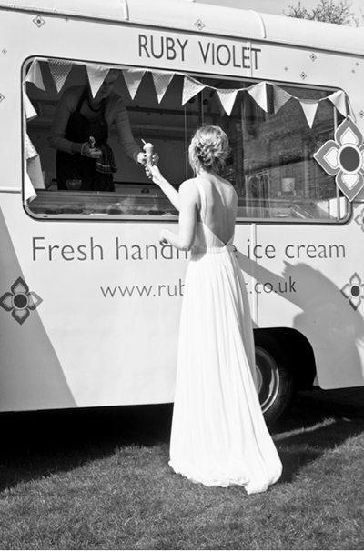

Billy the Van is a 1968 English Austin ice cream van who faithfully
takes Ruby Violet ice cream all over the UK. He can be hired forspecial occasions such as weddings and birthdays, for corporate
events or simply a party with a difference. He can be filled with avariety of flavours, personalised wafers, cones, napkins and can be accompanied by members of staff with usherette trays. Billy has had
the pleasure of serving ice cream at a wonderful variety of events, to everyone who loves ice cream. We pride ourselves on ensuring allour events are as personal and as bespoke as possible, please contact
us to discuss your options. "Dear Julie I have been meaning to write toyou to thank YOU for coming to the street party. The feedback
we have had has been amazing! Everything about your visit from the beautiful van to the delicious and unusual ice creams was a huge hit and greatly appreciated by young and old alike. I walk past your shop premises every Tuesday on my way to work in Kentish Town and have been intrigued to see it developing. I am sure it will be a huge success. So, many thanks again - your visit was a highlight and I am sure will become a firm fixture on the street party's itinerary from now on. Very best wishes Claire PS: particular thanks also to your assistant on the day who bravely faced a hoard of impatient children while she set up the van - quite a scary moment!" "The most amazing ice cream van parked in our car park at work yesterday to help us celebrate a very special day! Such delicious Ice cream made with love- Thank you you made everyone sooo happy !!"